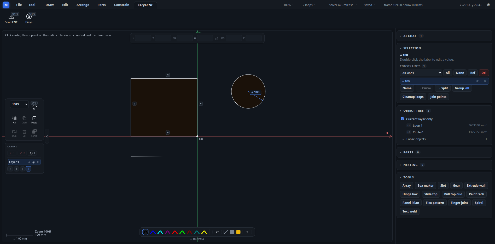
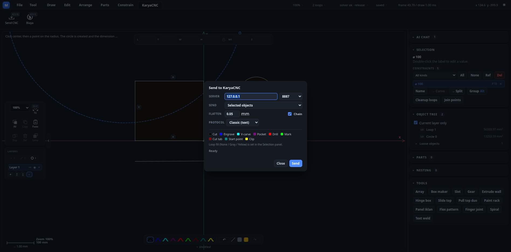
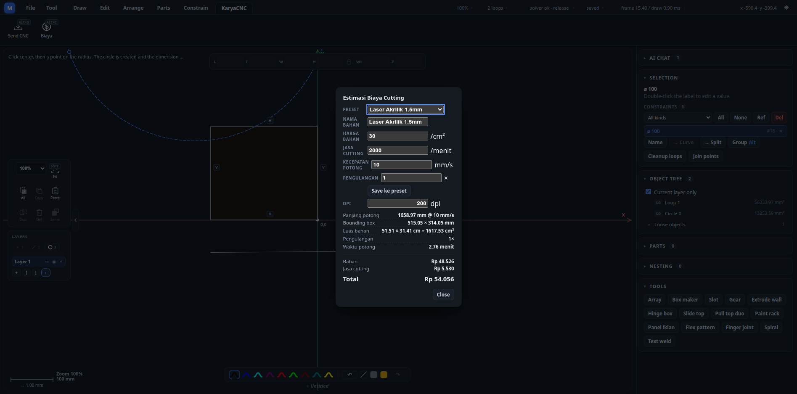

Tab KaryaCNC — Kirim ke Mesin
Tab KaryaCNC mengirim sketsa ke mesin KaryaCNC melalui dialog Tool ▸ Send to KaryaCNC (Alt+Q). Warna loop ditafsirkan sebagai proses mesin.

1. Dialog Send to KaryaCNC
| Pengaturan | Keterangan |
|---|---|
| Server (Host & port) | Host KaryaCNC dan port WebSocket (default 8887, rentang 8885–8889). |
| Send (Scope) | Objek yang dikirim: terpilih, terlihat, atau hanya layer aktif. |
| Flatten tolerance | Circles dan arcs di-flatten sehingga tidak menyimpang lebih dari nilai ini (mm). Default 0.05 mm. |
| Chain | Gabungkan segmen yang bersentuh menjadi satu path (kontur tertutup jadi cut loop). |
| Protocol / Route | Classic = teks WebSocket (default). Express = JSON job frame (v1 wire contract, skipJoin:true). |
Sebelum kirim: pastikan semua dimensi penggerak terpenuhi (dimensi belum terpenuhi digambar warna amber). Jendela CNC akan memperingatkan sebelum mengirim.

2. Estimasi Biaya Cutting
Buka melalui tombol Biaya di ribbon KaryaCNC. Dialog berisi:
- Preset — bahan & mesin (cost.txt).
- Nama bahan — tersimpan ke preset saat Save.
- Harga bahan per cm².
- Jasa cutting per menit potong.
- Kecepatan potong mesin (mm/s).
- Pengulangan — berapa kali jalur potong dilalui.
- DPI — resolusi engrave (menentukan jumlah baris raster).
Hasil estimasi ditampilkan di bawah parameter. Klik Save ke preset untuk menyimpan nilai.

3. Legenda warna operasi KaryaCNC
| Warna | Operasi |
|---|---|
| Hitam | Potong (cut) |
| Biru | Engrave |
| Cyan | V-carve |
| Ungu | |
| Merah | Drill (bor) |
| Hijau | Mark |
| Maroon | Cut tab |
| Teal | Titik awal (start point) |
| Kuning | Clip (batas engrave) |
Warna adalah operasinya — tidak ada pemetaan per layer. Sembilan kode garis di atas mengikuti kode stroke KaryaCNC.
4. Loop fill dan Sort weight
- Loop fill: klik di dalam loop tertutup, pilih None, Gray (batas material: semua di dalam dibalik), atau Yellow (balik arah offset kontur).
- Sort weight (Wt) di strip L/T/W/H: menentukan urutan pemotongan (−100 sampai 100; semakin tinggi dipotong kemudian di KaryaCNC, dikirim ×100).
- Depth override (Z): kedalaman mesin dalam mm untuk objek terpilih (harus > 0), dikirim sebagai
p.depth. Kosong atau 0 = default mesin. Objek dengan depth ditandai badge Z (mis.Z 2.5).
Teks dan objek hasil paste di-trace saat dikirim, atau tekan → Curve terlebih dahulu. SVG export bisa hanya pilihan, hanya layer terlihat, atau hanya layer aktif, dengan garis hairline untuk Inkscape.